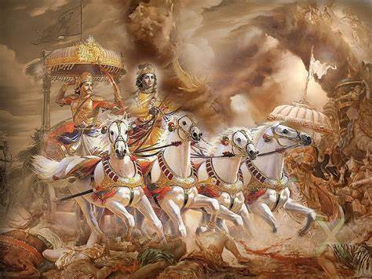

why someone born rich or someone is born poor?
Karma is the law of cause and effect. Your actions (karma) in past lives
influence your present circumstances, including your birth.
If someone lived a life of charity and virtue (sattvic qualities) in a past life,
they might be born into a wealthy family to continue their spiritual pursuits.
The Srimad Bhagavatam emphasizes spiritual growth over material wealth.
Being born poor could be an opportunity to learn detachment and develop one's character